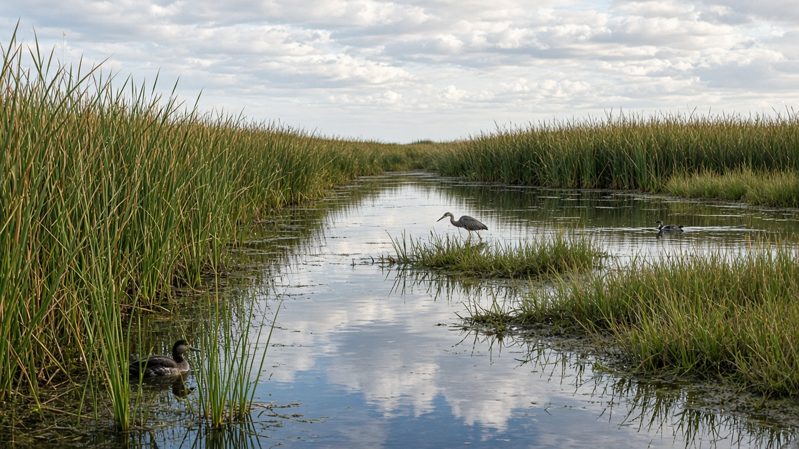
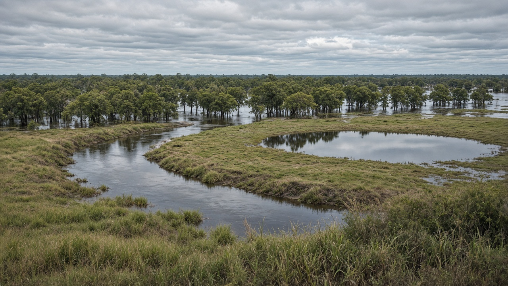
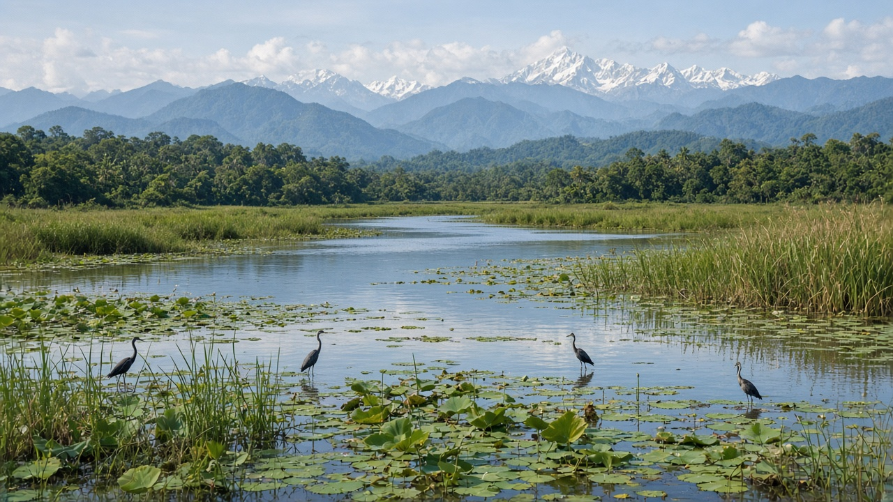

Wetland Hydrology and Floodplain Ecosystems
Published on August 15, 2026

Wetlands and floodplain ecosystems occupy the dynamic interface between land and water, including marshes, swamps, river floodplains, oxbow lakes, and seasonally inundated grasslands. Their hydrology is defined by periodic flooding, saturated soils, and fluctuating water levels that create unique habitats for plants, birds, fish, amphibians, and microorganisms. These ecosystems act as natural sponges, absorbing excess rainfall and river overflow, then releasing water slowly during dry periods. This regulation reduces peak flood heights downstream, recharges groundwater, filters sediments and nutrients, and supports fisheries and agriculture that depend on fertile alluvial soils deposited during floods.
Despite their ecological and hydrological value, wetlands have been drained, filled, and converted for agriculture, urban development, and infrastructure projects at alarming rates worldwide. Embankments that confine rivers, dam operations that alter natural flood pulses, and pollution from upstream settlements all degrade floodplain function. In Nepal, wetlands ranging from high-altitude lakes to Terai river floodplains and Ramsar-designated sites provide critical stopover habitat for migratory birds and support livelihoods through fishing, grazing, and reed harvesting. Protecting these areas requires understanding how changes in upstream watersheds and river management affect wetland water levels and biodiversity.
Conservation and restoration of wetland hydrology involve maintaining natural flood regimes where possible, removing obstructive drainage where safe to do so, controlling invasive species, and integrating wetland protection into river basin planning. Community-based monitoring of water levels and bird populations can provide early signals of hydrological stress. Nature-based flood management increasingly recognizes that allowing rivers room to spread across floodplains can reduce disaster losses more cost-effectively than building ever-higher walls alone. By safeguarding wetland hydrology and floodplain ecosystems, societies preserve biodiversity, enhance water security, and build natural defenses against the intensifying floods and droughts associated with climate change.

सिमसार र बाढी मैदान पारिस्थितिकी तन्त्रहरूले भूमि र पानी बीचको गतिशील सीमा ओगट्छन्, जसमा दलदल, दलदलीय वन, नदी बाढी मैदान, घुमाउरो ताल र मौसमी रूपमा डुबेका घाँसेमैदान समावेश छन्। तिनको जलवैज्ञानिक विशेषता आवधिक बाढी, जलयुक्त माटो र उतार-चढाव भएका जल स्तरहरूले निर्धारण गर्छ, जसले बिरुवा, चरा, माछा, उभयचर र सूक्ष्मजीवहरूका लागि अद्वितीय वासस्थान सिर्जना गर्छ। यी पारिस्थितिकी तन्त्रहरू प्राकृतिक पानी सोख्ने क्षेत्रको रूपमा काम गर्छन्, अतिरिक्त वर्षा र नदीको बाढीलाई सोर्छन्, र सुक्खा अवधिमा पानी बिस्तारै छोड्छन्। यो नियमनले तल्लो तटमा चरम बाढी उचाइ घटाउँछ, भू-जल पुनःभरण गर्छ, गाद र पोषक तत्व छान्छ, र बाढीमा जमेको उर्वर जलोढ माटोमा निर्भर मत्स्य पालन र कृषि समर्थन गर्छ।
तिनको पारिस्थितिक र जलवैज्ञानिक महत्व भए तापनि, विश्वभर सिमसारहरू चिन्ताजनक दरमा सुखाउने, भर्ने र कृषि, शहरी विकास र पूर्वाधार परियोजनाका लागि रूपान्तरण भइरहेका छन्। नदीलाई सीमित गर्ने तटबन्ध, प्राकृतिक बाढी लय परिवर्तन गर्ने बाँध सञ्चालन, र माथिल्लो बस्तीबाट आउने प्रदूषणले बाढी मैदान कार्यक्षमता कमजोर पार्छ। नेपालमा उच्च उचाइका तालदेखि तराई नदी बाढी मैदान र रामसार-नामाङ्कित स्थलहरूसम्मका सिमसारहरूले प्रवासी चराका लागि महत्त्वपूर्ण विश्रामस्थल वासस्थान प्रदान गर्छन् र माछा मार्ने, चरन र नरमैन काट्ने मार्फत जीविकोपार्जन समर्थन गर्छन्। यी क्षेत्र संरक्षण गर्न माथिल्लो जलग्रह र नदी व्यवस्थापनमा परिवर्तनले सिमसार जल स्तर र जैविक विविधतामा कसरी असर पार्छ भन्ने बुझ्न आवश्यक छ।
सिमसार जलवैज्ञानिक संरक्षण र पुनर्स्थापनामा सम्भव भएसम्म प्राकृतिक बाढी व्यवस्था कायम राख्ने, सुरक्षित भएमा बाधक जल निकास हटाउने, आक्रमक प्रजाति नियन्त्रण गर्ने, र सिमसार संरक्षणलाई नदी क्षेत्र योजनामा समावेश गर्ने काम समावेश छ। जल स्तर र चरा जनसंख्याको समुदाय-आधारित अनुगमनले जलवैज्ञानिक तनावका प्रारम्भिक संकेत दिन सक्छ। प्रकृति-आधारित बाढी व्यवस्थापनले बढ्दै गएर यो स्वीकार गर्छ कि नदीलाई बाढी मैदानमा फैलिने ठाउँ दिनु मात्र अझ अग्लो पर्खाल बनाउनुभन्दा प्रकोप हानि अधिक लागत-प्रभावकारी रूपमा घटाउन सक्छ। सिमसार जलवैज्ञानिक र बाढी मैदान पारिस्थितिकी तन्त्र संरक्षण गरेर समाजहरूले जैविक विविधता संरक्षण गर्छन्, जल सुरक्षा बढाउँछन्, र जलवायु परिवर्तनसँग सम्बन्धित बढ्दो बाढी र सुक्खाबिरुद्ध प्राकृतिक रक्षा निर्माण गर्छन्।

दलदलीय क्षेत्र और बाढ़ मैदान पारिस्थितिकी तंत्र भूमि और जल के बीच गतिशील सीमा पर स्थित होते हैं, जिनमें दलदल, दलदलीय वन, नदी बाढ़ मैदान, घुमाउरो झीलें और मौसमी रूप से जलमग्न घास के मैदान शामिल हैं। इनकी जलवैज्ञानिक विशेषता आवधिक बाढ़, जलयुक्त मिट्टी और उतार-चढ़ाव वाले जल स्तरों द्वारा निर्धारित होती है, जो पौधों, पक्षियों, मछलियों, उभयचरों और सूक्ष्मजीवों के लिए अद्वितीय आवास बनाती है। ये पारिस्थितिकी तंत्र प्राकृतिक जल सोखने वाले क्षेत्र की तरह काम करते हैं, अतिरिक्त वर्षा और नदी के बाढ़ जल को सोखते हैं, और सूखे समय में धीरे-धीरे पानी छोड़ते हैं। यह नियमन निचले तट पर चरम बाढ़ की ऊंचाई कम करता है, भू-जल पुनःभरण करता है, तलछट और पोषक तत्व छानता है, और बाढ़ के दौरान जमा उपजाऊ जलोढ़ मिट्टी पर निर्भर मत्स्य पालन और कृषि का समर्थन करता है।
इनके पारिस्थितिक और जलवैज्ञानिक महत्व के बावजूद, विश्वभर दलदलीय क्षेत्रों को चिंताजनक दर से सुखाया, भरकर और कृषि, शहरी विकास और बुनियादी ढांचा परियोजनाओं के लिए रूपांतरित किया जा रहा है। नदियों को सीमित करने वाले तटबंध, प्राकृतिक बाढ़ लय बदलने वाले बांध संचालन, और ऊपरी बस्तियों से आने वाला प्रदूषण बाढ़ मैदान कार्यक्षमता को कमजोर करते हैं। नेपाल में उच्च ऊंचाई की झीलों से लेकर तराई नदी बाढ़ मैदान और रामसार-नामित स्थलों तक के दलदल प्रवासी पक्षियों के लिए महत्वपूर्ण विश्रामस्थल आवास प्रदान करते हैं और मछली पकड़ने, चरागाह और नरकुल काटने के माध्यम से आजीविका का समर्थन करते हैं। इन क्षेत्रों की रक्षा के लिए यह समझना आवश्यक है कि ऊपरी जलग्रह और नदी प्रबंधन में बदलाव दलदल के जल स्तर और जैव विविधता को कैसे प्रभावित करते हैं।
दलदल जलवैज्ञानिक संरक्षण और बहाली में जहां संभव हो प्राकृतिक बाढ़ व्यवस्था बनाए रखना, सुरक्षित होने पर बाधक जल निकास हटाना, आक्रमक प्रजातियों का नियंत्रण, और दलदल संरक्षण को नदी क्षेत्र योजना में एकीकृत करना शामिल है। जल स्तर और पक्षी जनसंख्या की समुदाय-आधारित निगरानी जलवैज्ञानिक तनाव के प्रारंभिक संकेत दे सकती है। प्रकृति-आधारित बाढ़ प्रबंधन तेजी से यह स्वीकार कर रहा है कि नदियों को बाढ़ मैदानों में फैलने की जगह देना केवल और अधिक ऊंची दीवारें बनाने की तुलना में आपदा हानि को अधिक लागत-प्रभावी ढंग से कम कर सकता है। दलदल जलवैज्ञानिक और बाढ़ मैदान पारिस्थितिकी तंत्रों की रक्षा करके समाज जैव विविधता संरक्षित करते हैं, जल सुरक्षा बढ़ाते हैं, और जलवायु परिवर्तन से जुड़ी बढ़ती बाढ़ और सूखे के खिलाफ प्राकृतिक रक्षा बनाते हैं।